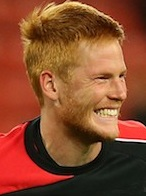

Birthdate: 6 March 1988
Birthplace: Sint-Truiden, Belgium
Other clubs: Sint-Truiden (2004-19), Sunderland (2010-13)
Bought from: Sunderland
Signed for LFC: £9m, 25.06.2013
Total LFC games/goals: 149 / 0

Birthdate: 27 September 1987
Birthplace: Budapest, Hungary
Other clubs: Vasas (2005-2007), Vecses (loan, 2006),
Bolton Wanderers (2007-15), Crewe Alexandra (loan, 2009)
Bought from: Bolton Wanderers
Signed for LFC: 01.07.2015
Total LFC games/goals: 6 / 0
Birthdate: 5 April 1991
Birthplace: Stockwell, London, England
Other clubs: Crystal Palace (2008-12), Southampton (2012-15)
Bought from: Southampton
Signed for LFC: £12.5m, 01.07.2015
Total LFC games/goals: 52 / 2